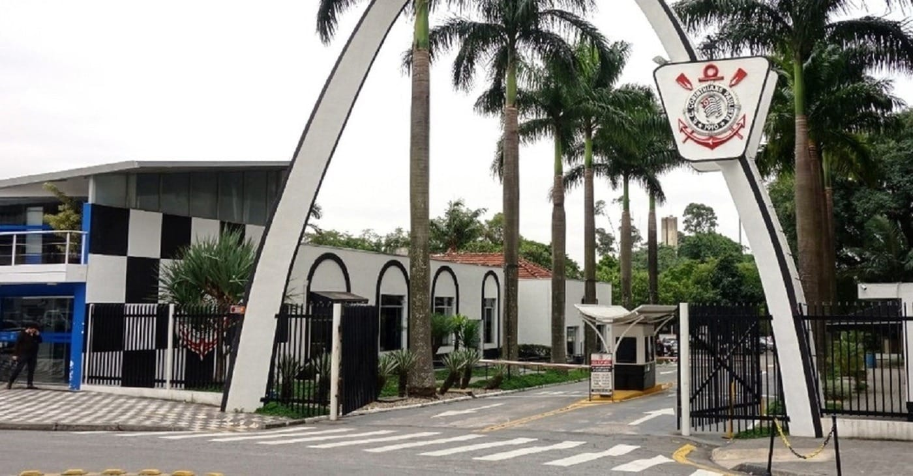

Corinthians
Corinthians define eleição presidencial com cinco chapas no Parque São Jorge em 28 de novembro
17/11/2026 às 00:39 (horário de Brasília)

A eleição para a presidência do Corinthians foi marcada para o dia 28 de novembro, um sábado, na sede social do Parque São Jorge, em São Paulo. O pleito definirá a nova diretoria executiva, composta por presidente e dois vice-presidentes, que comandará a agremiação durante o triênio 2027–2029.
Cinco chapas concorrem ao comando do clube: José Augusto Cardoso Mendes (Chapa 08, "Integridade"), Ilmar Schiavenato (Chapa 09, "Basta"), Sérgio Janikian (Chapa 05, "Corinthians de Verdade"), André Castro (Chapa 27, "Transforma Corinthians") e Rozallah Santoro (Chapa "Todo Dia Pelo Corinthians"). Os pedidos de impugnação contra Castro e Santoro foram rejeitados pelo Conselho Deliberativo, homologando todos os postulantes. O atual presidente, Osmar Stábile, não concorre à reeleição.
A votação será presencial e restrita a associados com pelo menos cinco anos ininterruptos de filiação, cadastro biométrico, maioridade civil e mensalidades quitadas, excluindo membros do programa Fiel Torcedor. O eleito enfrentará um cenário financeiro complexo, marcado por dívidas bilionárias, pendências com a Caixa Econômica Federal e débitos salariais que já atingiram dezenas de milhões de reais.